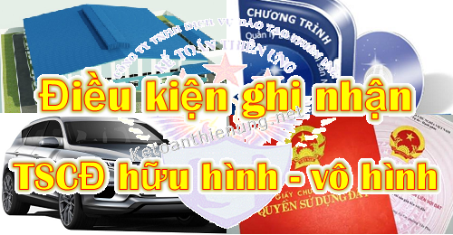

Điều kiện ghi nhận tài sản cố định hữu hình; Điều kiện ghi nhận TSCĐ vô hình; Các tiêu chuẩn ghi nhận Tài sản cố định theo quy định tại Thông tư 45/2013/TT-BTC cụ thể như sau:
Căn cứ theo điều 3 Thông tư 45/2013/TT-BTC của Bộ tài chính Quy định Tiêu chuẩn và nhận biết Tài sản cố định hữu hình, vô hình cụ thể như sau:
1. Điều kiện ghi nhận TSCĐ hữu hình:
- Tài sản cố định hữu hình: là những tư liệu lao động chủ yếu có hình thái vật chất thoả mãn các tiêu chuẩn của tài sản cố định hữu hình, tham gia vào nhiều chu kỳ kinh doanh nhưng vẫn giữ nguyên hình thái vật chất ban đầu như nhà cửa, vật kiến trúc, máy móc, thiết bị, phương tiện vận tải...
- Tư liệu lao động là những tài sản hữu hình có kết cấu độc lập, hoặc là một hệ thống gồm nhiều bộ phận tài sản riêng lẻ liên kết với nhau để cùng thực hiện một hay một số chức năng nhất định mà nếu thiếu bất kỳ một bộ phận nào thì cả hệ thống không thể hoạt động được, nếu thoả mãn đồng thời cả ba tiêu chuẩn dưới đây thì được coi là tài sản cố định:
a) Chắc chắn thu được lợi ích kinh tế trong tương lai từ việc sử dụng tài sản đó;
b) Có thời gian sử dụng trên 1 năm trở lên;
c) Nguyên giá tài sản phải được xác định một cách tin cậy và có giá trị từ 30.000.000 đồng (Ba mươi triệu đồng) trở lên.
----------------------------------------------------------------------------------------
Chi tiết 1 số trường hợp cụ thể như sau:
- Trường hợp một hệ thống gồm nhiều bộ phận tài sản riêng lẻ liên kết với nhau, trong đó mỗi bộ phận cấu thành có thời gian sử dụng khác nhau và nếu thiếu một bộ phận nào đó mà cả hệ thống vẫn thực hiện được chức năng hoạt động chính của nó nhưng do yêu cầu quản lý, sử dụng tài sản cố định đòi hỏi phải quản lý riêng từng bộ phận tài sản thì mỗi bộ phận tài sản đó nếu cùng thoả mãn đồng thời ba tiêu chuẩn của tài sản cố định được coi là một tài sản cố định hữu hình độc lập.
- Đối với súc vật làm việc và/hoặc cho sản phẩm, thì từng con súc vật thoả mãn đồng thời ba tiêu chuẩn của tài sản cố định được coi là một TSCĐ hữu hình.
- Đối với vườn cây lâu năm thì từng mảnh vườn cây, hoặc cây thoả mãn đồng thời ba tiêu chuẩn của TSCĐ được coi là một TSCĐ hữu hình.
- Trường hợp một hệ thống gồm nhiều bộ phận tài sản riêng lẻ liên kết với nhau, trong đó mỗi bộ phận cấu thành có thời gian sử dụng khác nhau và nếu thiếu một bộ phận nào đó mà cả hệ thống vẫn thực hiện được chức năng hoạt động chính của nó nhưng do yêu cầu quản lý, sử dụng tài sản cố định đòi hỏi phải quản lý riêng từng bộ phận tài sản thì mỗi bộ phận tài sản đó nếu cùng thoả mãn đồng thời ba tiêu chuẩn của tài sản cố định được coi là một tài sản cố định hữu hình độc lập.
- Đối với súc vật làm việc và/hoặc cho sản phẩm, thì từng con súc vật thoả mãn đồng thời ba tiêu chuẩn của tài sản cố định được coi là một TSCĐ hữu hình.
- Đối với vườn cây lâu năm thì từng mảnh vườn cây, hoặc cây thoả mãn đồng thời ba tiêu chuẩn của TSCĐ được coi là một TSCĐ hữu hình.
---------------------------------------------------------------------------------------------
2. Điều kiện ghi nhận Tài sản cố định vô hình:
- Tài sản cố định vô hình: là những tài sản không có hình thái vật chất, thể hiện một lượng giá trị đã được đầu tư thoả mãn các tiêu chuẩn của tài sản cố định vô hình, tham gia vào nhiều chu kỳ kinh doanh, như một số chi phí liên quan trực tiếp tới đất sử dụng; chi phí về quyền phát hành, bằng phát minh, bằng sáng chế, bản quyền tác giả...
- TSCĐ vô hình gồm: Quyền sử dụng đất, quyền tác giả, quyền sở hữu công nghiệp, quyền đối với giống cây trồng, các chương trình phần mềm ...
Tiêu chuẩn ghi nhận TSCĐ vô hình: Mọi khoản chi phí thực tế mà doanh nghiệp đã chi ra thoả mãn đồng thời cả ba tiêu chuẩn quy định tại khoản 1 nêu trên, mà không hình thành TSCĐ hữu hình được coi là TSCĐ vô hình.
---------------------------------------------------------------------------------
- Những khoản chi phí không đồng thời thoả mãn cả ba tiêu chuẩn nêu tại khoản 1 nêu trên thì được hạch toán trực tiếp hoặc được phân bổ dần vào chi phí kinh doanh của doanh nghiệp.
- Riêng các chi phí phát sinh trong giai đoạn triển khai được ghi nhận là TSCĐ vô hình tạo ra từ nội bộ doanh nghiệp nếu thỏa mãn đồng thời bảy điều kiện sau:
a) Tính khả thi về mặt kỹ thuật đảm bảo cho việc hoàn thành và đưa tài sản vô hình vào sử dụng theo dự tính hoặc để bán;
b) Doanh nghiệp dự định hoàn thành tài sản vô hình để sử dụng hoặc để bán;
c) Doanh nghiệp có khả năng sử dụng hoặc bán tài sản vô hình đó;
d) Tài sản vô hình đó phải tạo ra được lợi ích kinh tế trong tương lai;
đ) Có đầy đủ các nguồn lực về kỹ thuật, tài chính và các nguồn lực khác để hoàn tất các giai đoạn triển khai, bán hoặc sử dụng tài sản vô hình đó;
e) Có khả năng xác định một cách chắc chắn toàn bộ chi phí trong giai đoạn triển khai để tạo ra tài sản vô hình đó;
g) Ước tính có đủ tiêu chuẩn về thời gian sử dụng và giá trị theo quy định cho tài sản cố định vô hình.
-----------------------------------------------------------------------------------------------
Lưu ý: Những khoản chi phí sau Không phải là TSCĐ vô hình, mà được phân bổ dần vào chi phí kinh doanh của DN (Tối đa không quá 3 năm):
Xem thêm: Chi phí trước khi thành lập Doanh nghiệp.
----------------------------------------------------------------------------------------------
=> Sau khi đã xác định được đó là TSCĐ và nguyên giá các bạn tiến hành trích khấu hao TSCĐ, chi tiết xem thêm:
-----------------------------------------------------------------------------------
Các bạn muốn học thực hành làm kế toán tổng hợp trên chứng từ thực tế, thực hành xử lý các nghiệp vụ hạch toán, tính thuế, kê khai thuế GTGT. TNCN, TNDN... tính lương, trích khấu hao TSCĐ....lập báo cáo tài chính, quyết toán thuế cuối năm ...
-> thì có thể tham gia: Lớp học thực hành kế toán thực tế tại Kế toán Diệu Tâm
-> thì có thể tham gia: Lớp học thực hành kế toán thực tế tại Kế toán Diệu Tâm
__________________________________________________
